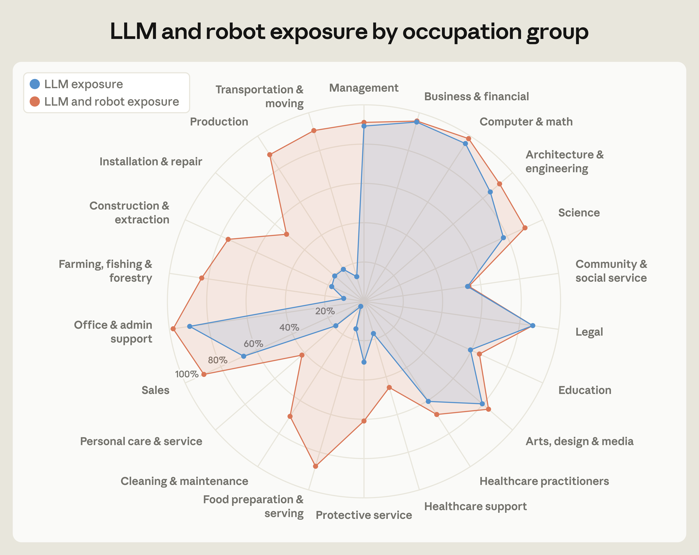

Guía · Página 1 · 0–8 min
Mi próximo paso en Gráfica
¿Cómo elegir una oportunidad laboral en Gráfica cuando la IA cambia las tareas del oficio?
Piensen en el último trabajo que realizaron en el taller. Nombren una tarea que hicieron con software y otra que exigió manipular materiales.
Conversen en parejas y escriban dos tareas en la guía.
Guía · Página 1 · 0–8 min
Acuerdos para investigar
Trabajen en parejas con una tableta; cada estudiante responde en su guía o cuaderno. Alternen búsqueda y registro.
No se permite el uso de celular durante la actividad, salvo indicación del profesor.
Registren las fuentes. No inventen datos ni envíen documentos personales, pagos o postulaciones durante la clase.
Escuchen otras conclusiones y pidan la evidencia que las sostiene.
Guía · Página 1 · 0–8 min
Objetivo de la clase
Evaluar información de un gráfico, ofertas laborales y un caso de contratación para justificar una decisión laboral en Gráfica, distinguiendo datos, inferencias y condiciones por aclarar.
Al terminar: tabla comparativa, preguntas al empleador y una decisión fundamentada.
Guía · Página 1 · 8–20 min
Una ocupación reúne tareas
| Concepto | Ejemplo |
|---|---|
| Ocupación y tarea | Una ocupación reúne tareas. Un operador de impresión puede preparar archivos, ajustar una máquina y revisar un impreso. Una tecnología puede ayudar en una tarea y requerir supervisión en otra. |
Expliquen por qué automatizar una tarea no demuestra que desaparezca una ocupación.
Guía · Página 2 · 8–20 min
¿Qué muestra el gráfico?

Azul: LLM. Naranja: LLM y robots. Pulsen la imagen para ampliarla.
Guía · Página 2 · 8–20 min
Leer la escala y la fuente
LLM significa modelo de lenguaje: una IA que procesa y genera texto. Lean los radios del centro hacia afuera: 20 %, 40 %, 60 %, 80 % y 100 %.
En la imagen: Arts, design & media = Artes, diseño y medios; Production = Producción.
Fuente: Anthropic, figura 6 · 30 de septiembre de 2026. Datos de ocupaciones de Estados Unidos.
Comparen las dos líneas en el mismo grupo; no comparen el área de los polígonos.
Guía · Página 2 · 8–20 min
Exposición no significa despido
La exposición indica qué parte de las tareas podría realizarse o acelerarse con una tecnología, según los criterios del estudio. No equivale al porcentaje de personas que perderán su empleo. El gráfico agrupa ocupaciones de Estados Unidos: no representa el mercado de Talca ni entrega una cifra específica para cada oficio gráfico. La adopción depende también de costos, condiciones de trabajo y decisiones de las organizaciones.
Subrayen en la guía una limitación del gráfico.
Guía · Página 2 · 8–20 min
Del gráfico a una pregunta
1. Comparen «Artes, diseño y medios» con «Producción». ¿En cuál se separan más las dos líneas? Describan lo que observan.
2. ¿Por qué este gráfico no basta para afirmar que desaparecerá un porcentaje de empleos gráficos en Talca?
3. Formulen una pregunta que puedan investigar hoy sobre una tarea de Gráfica y el uso de IA.
Respondan las tres preguntas de la página 2. No atribuyan al gráfico una cifra específica para Gráfica.
Guía · Página 1 · 20–30 min
¿Dónde buscar dentro de Gráfica?
| Proceso | Palabras para buscar |
|---|---|
| Preprensa o preimpresión | Preparación y revisión de archivos; preprensa; arte final. |
| Impresión | Impresión digital; operador de plotter; ayudante de imprenta. |
| Terminaciones o postimpresión | Corte; laminado; encuadernación; terminaciones gráficas. |
Elijan un cargo por sus tareas. «Diseño gráfico» no abarca por sí solo toda la especialidad.
Guía · Página 3 · 20–30 min
Leamos un aviso real
Producción gráfica · Conchalí. Abrir aviso en la Bolsa Nacional de Empleo. Consulta: 26 de octubre de 2026.
Publicado para el período 19 de octubre–2 de noviembre de 2026. Informa un rango de $610.001 a $760.000, jornada completa y contrato a plazo fijo.
Menciona corte, laminación y montaje; valora manejo de una cortadora XY y disposición para capacitarse.
Es un ejemplo para aprender a leer. Verifiquen fecha y disponibilidad al abrirlo.
Guía · Página 3 · 20–30 min
Dato, inferencia y duda
| Distinción | Cómo registrarla |
|---|---|
| Dato del aviso | Informa un rango salarial; no indica en esa cifra si es bruto o líquido. |
| Inferencia que debo comprobar | Podría necesitar práctica en corte XY. El aviso no demuestra que esta tarea use IA. |
| Pregunta al empleador | ¿Cuál es el sueldo bruto y cuál sería el líquido estimado? ¿Cuál es el horario diario? |
El profesor modela una fila. No completen los vacíos con suposiciones.
Guía · Página 3 · 20–30 min
Una fuente también se revisa
Comprueben fecha, empresa y coherencia de los datos. En el aviso de ejemplo, el giro de la empresa registrado no coincide a simple vista con la descripción gráfica.
Esa diferencia requiere consultar al empleador; por sí sola no prueba una estafa. Guardar el enlace permite verificarla.
Un aviso describe una vacante: no demuestra cuánto empleo existe en toda una región.
En el organizador distingan lo informado, lo que deducen y lo que falta confirmar.
Guía · Página 3 · 30–55 min
Busquen dos ofertas, en 25 minutos
1. Elijan dos cargos de Gráfica. Busquen primero en Talca o el Maule.
2. Si no encuentran avisos vigentes, amplíen a otra región y anótenlo. No encontrar también es un resultado.
3. Completen las dos columnas de la página 3. Escriban «no se informa» cuando falte un dato.
En parejas: una persona busca y otra registra; cambien de función para la segunda oferta.
Guía · Página 3 · 30–55 min
Consultas y portales de búsqueda
Prueben: «ayudante de imprenta Talca», «preprensa Maule», «operador impresión digital», «terminaciones gráficas».
Bolsa Nacional de Empleo · Trabajando · Computrabajo
Abran el aviso completo. Un resultado del buscador puede estar vencido.
Sin conexión: analicen el aviso de ejemplo impreso y el caso ficticio; dejen pendiente la comparación de dos avisos reales.
Guía · Página 3 · 30–55 min
Organizador · ¿Qué trabajo ofrecen?
| Registren en cada oferta | Pregunta guía |
|---|---|
| Cargo, empresa, lugar y fecha del aviso | ¿Sigue publicado y dónde se trabajaría? |
| Fuente y enlace para volver a abrirlo | ¿Podrá otra persona comprobar lo que anotaron? |
| Dos tareas concretas del cargo | ¿Qué acciones realizarían en una jornada? |
| Herramientas y experiencia requeridas | ¿Cuáles cumplen hoy y cuáles requieren aprender? |
Completen las primeras cuatro filas con datos del aviso.
Guía · Página 3 · 30–55 min
Organizador · ¿Qué falta saber?
| Registren en cada oferta | Pregunta guía |
|---|---|
| Sueldo: cifra y si dice bruto o líquido | ¿La cifra aclara qué se recibe y qué se descuenta? |
| Jornada, tipo de contrato y duración | ¿Detalla días, horas y plazo? |
| Una tarea que la IA podría apoyar: fuente o hipótesis | ¿Qué herramienta podría ayudar y qué seguiría revisando una persona? |
| Qué debo aprender y qué preguntaría al empleador | ¿Qué acción concreta harían para prepararse? |
Completen las últimas cuatro filas. Una posibilidad de uso de IA debe llevar evidencia o decir «hipótesis».
Guía · Página 3 · 30–55 min
Investigar el cambio de una tarea
Elijan una tarea de uno de los avisos. Busquen una fuente sobre una herramienta de IA que podría apoyarla: documentación del fabricante, una institución o una demostración identificable.
Anoten herramienta, enlace, función y límite. Ejemplo de pregunta: ¿genera una propuesta visual o también verifica el archivo y el impreso final?
La capacidad anunciada de una herramienta no demuestra que la empresa del aviso ya la utilice.
Si no logran verificarlo, escriban «hipótesis por comprobar». La respuesta de un chat no reemplaza la fuente.
Guía · Página 4 · 55–75 min
De la oferta a las condiciones de trabajo
El sueldo bruto se expresa antes de los descuentos correspondientes; el líquido es el monto que se recibe tras esos descuentos. Comparen cifras de la misma clase.
Un contrato a plazo fijo tiene fecha de término; uno indefinido no fija esa fecha. Ambos generan derechos laborales.
El contrato es consensual: la relación no depende solo del papel. Debe escriturarse dentro de los plazos legales. Revisar el texto permite aclarar los acuerdos.
Fuente: Dirección del Trabajo. Un anuncio atractivo no informa necesariamente todas las condiciones.
Guía · Página 4 · 55–75 min
Caso ficticio · Lo que anuncia la oferta
Taller Gráfico Sur busca ayudante de impresión digital en Talca. Anuncia $650.000 líquidos mensuales, lunes a viernes, capacitación en preparación de archivos y trabajo estable. Las tareas serían revisar archivos y apoyar la impresión y el laminado.
Lean el anuncio de Taller Gráfico Sur y marquen sueldo, días, duración y tareas.
Guía · Página 4 · 55–75 min
Caso ficticio · Lo que propone el borrador
El borrador propone $650.000 de sueldo base bruto; descuentos legales; 42 horas semanales de lunes a sábado; contrato a plazo fijo por tres meses. Funciones: apoyo de impresión y terminaciones. La capacitación y el horario diario no se detallan.
Regla para verificar: desde el 26 de abril de 2026, el límite general de la jornada ordinaria es de 42 horas semanales; existen regímenes y excepciones. Una cifra semanal no aclara por sí sola el horario diario.
El caso es inventado. No es el contrato de la oferta real de Conchalí.
Guía · Página 4 · 55–75 min
Comparen y preparen sus preguntas
| Aspecto | Qué deben contrastar |
|---|---|
| Sueldo | ¿Se promete líquido y se escribe bruto? ¿Qué falta calcular o aclarar? |
| Días y duración | ¿Coinciden los días? ¿«Estable» equivale a indefinido? |
| Tareas y aprendizaje | ¿Qué capacitación se ofrece y cómo quedaría acordada? |
Completen las tres filas de la página 4: diferencia y pregunta precisa. Revisen en parejas una pregunta demasiado general.
Guía · Página 4 · 75–85 min
Plenario · Una conclusión con evidencia
Hasta seis parejas disponen de un minuto cada una para compartir: cargo investigado, un dato del aviso, una posible transformación de una tarea y una condición por aclarar.
Quienes escuchan preguntan: «¿Eso lo dice la fuente o es una conclusión de ustedes?».
Corrijan en su guía un dato incompleto o una inferencia que hubieran escrito como certeza.
Compartimos conclusiones distintas cuando están fundamentadas; registramos una corrección.
Guía · Página 4 · 85–90 min
Volvamos a la pregunta inicial
¿Cómo elegir una oportunidad laboral en Gráfica cuando la IA cambia las tareas del oficio?
Escriban una recomendación de 4–5 líneas: elegiría la oferta ___ porque ___; lo sostengo con dos datos de las fuentes ___; antes de aceptar preguntaría ___; para prepararme aprenderé ___. Si ninguna es adecuada, justifiquen esa decisión.
Cada estudiante escribe su recomendación, aunque haya investigado en pareja.
Guía · Página 4 · 85–90 min
Lo que aprendimos a distinguir
Ocupación y tarea. Exposición tecnológica y pérdida de empleo. Dato e inferencia. Oferta y condiciones acordadas.
Comprueben: ¿usé dos datos verificables?, ¿reconocí lo que no sé?, ¿formulé una pregunta útil?, ¿definí un aprendizaje posible?
Muestren la guía o el cuaderno al profesor. La revisión considera la evidencia y la corrección que hicieron.
Cierre: señalen qué idea inicial cambiaron y qué evidencia les hizo cambiarla.